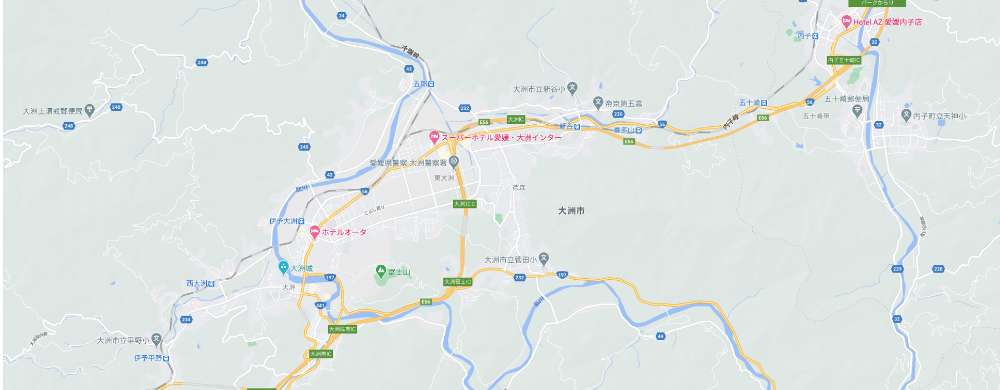

大洲城
マップ紹介
大洲城は、鎌倉時代末期の1331年に伊予国守護宇都宮豊房が築いた「地蔵ヶ嶽城」が始まりといわれ、以来、237年の長きにわたって居城としてきた。豊臣秀吉の四国平定後、近世初頭に大洲の地を治めた小早川隆景をはじめ、たくさんの大名たちが城主となったが、その間に近代城郭へと整備が行なわれた。「関ヶ原の合戦」後には乱世が収まり、築城の名手と呼ばれる藤堂高虎及び脇坂安治の時代に城下町が形成され始めた。のちに、加藤貞泰が城主となり、版籍奉還まで加藤氏の治世は続いた。
明治に入ると、城内のほとんどの建築物が破却され、1888年には老朽化により天守の解体も行われた。現在の天守は、住民の保護活動や寄付に始まり、専門家らによる伝統工法を用いた技術によって、約10年の歳月をかけて2004年に復元された。戦後復元された木造天守としての四層四階は日本初で、19.15mの高さは日本一である。天守の復元にあたっては、明治時代の古写真や豊富な資料を基に当時の姿を正確に復元された。復元に必要な多くの資料が残っていることは大変稀なことであり、大洲城の天守の復元は、まさに地元住民の想いと、史料研究の集大成と言える。
基本情報
所在地：
愛媛県大洲市大洲903
所在地：
愛媛県大洲市大洲903
所在地：
愛媛県大洲市大洲903
所在地：
愛媛県大洲市大洲903
所在地：
愛媛県大洲市大洲903

地図アイコンの説明：
ショッピング
フード
観光地